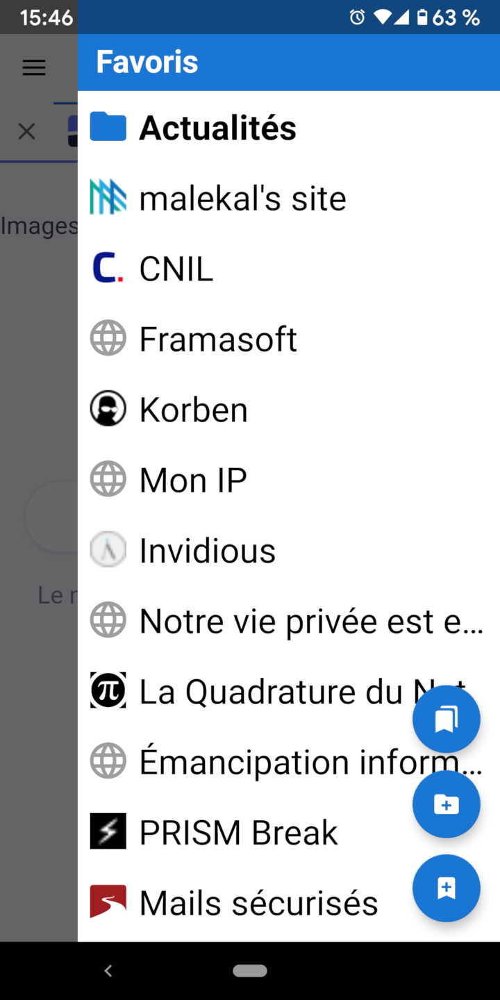

Favoris Favoris
Favoris FavorisLes favoris sont accessibles dans une disposition de tiroir en glissant depuis la droite de l'écran.
Appuyez sur le bouton d'action flottant en haut pour charger l'activité des favoris, qui comporte des options avancées comme le déplacement et la suppression de favoris. À partir de la vue de favoris, il existe une option pour charger la vue de la base de données de favoris. Cela affiche les favoris tels qu'ils existent dans la base de données SQLite, ce qui peut être utile pour résoudre les problèmes d'importation et d'exportation des favoris.